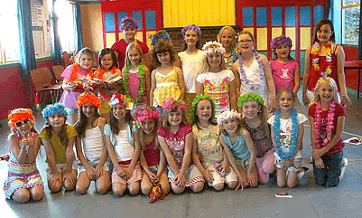
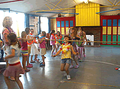
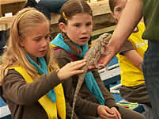
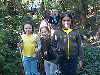
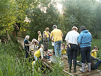
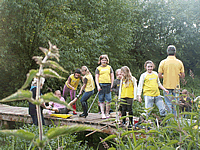
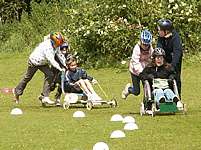

|
1st Birch Green Brownies
Saturday 21st March - Tewin Memorial Hall - Royal British Legion Cup Competition
Wednesday 11th March Girlguiding Hertford AGM - West Street 7.15
Monday 30th March Scouting & Guiding "Ole Campefire" evening - Birch Green 7.00
Sunday 10th May Annual Sausage Sizzle at Birch Green School
Saturday September 19th (tbc) Hertford District Sports Day
Saturday October 3rd Annual Night Hike - Location to be confirmed
Who runs 1st Birch Green & how to contact us.
Brown Owl - Emily
Snowy Owl - Kate
Tawny Owl - Elaine
Badger - Fionnuala
Fox - Jessica
Rabbit & Owl in Training - Lauren
Mole - Grace
Email: brownies@1stbirchgreen.org.uk
If you want to join Girlguiding or be added to our waiting list, please register your interest at:
http://www.girlguiding.org.uk/get_involved.aspx
If you are already a Rainbow, you do not need to register, please e mail us with full name
Date of Birth, contact number and which Rainbow Unit you are with or have been with
The Brownie Promise is:
- I PROMISE THAT i WILL DO MY BEST:
- TO BE TRUE TO MYSELF AND DEVELOP MY BELIEFS
- TO SERVE THE QUEEN AND MY COMMUNITY
- TO HELP OTHER PEOPLE
- AND TO KEEP THE BROWNIE GUIDE LAW
A Brownie Guide thinks of others before herself and does a good turn every day.

Joint first place Brownie Sports September 2014
Some History....
At the end of the summer term 2012, we sadly said "Farewell" to Brown Owl Elaine Peacock. We gave her a surprise party with cake and prezzies!
A collection from parents and friends resulted in a Crystal Vase with the Girlguiding Logo on, a Beauty Salon Voucher and a lovely pink Hydrangea. District Commissioner Clare Evans presented Elaine with a gift and a vote of thanks for all her work for Girlguiding over almost 30 years. We wish Elaine all the best but will still see her from time to time when extra hands are needed.


 |
 |
Activities at Brownies
We gain badges either at our meetings or at home, hobbies and activities such as dancing, swimming and horse riding that we do can gain us badges too. For Summer 2012 we will be gaining a special Golden Jubilee Badge to commemorate the Queens 60 years onthe throne.
After Brownies we can join Guides, both of our Young Leaders used to be Brownies at Birch Green when they were younger.
PREVIOUS EVENTS
2011 - OUR BIRTHDAY YEAR

The Owlets - Birch Green Cheerleading Squad before the competition

The Owlets in action
We didn't win but we had a great time, and we looked good too!
HIGHLIGHTS OF 2010 INCLUDED:
WINNERS OF ROYAL BRITISH LEGION CUP 2010
Maddy, Christina, Elly and Megan – winners of the Royal British Legion Cup for 1st Birch Green Brownies
We are delighted to win the RBL Cup in 2010, last time we won it was 2004. This year the competition was based on the Healthy Hearts Badge. We had to do lots of activities as a Pack covering healthy eating and making vegetable and fruit characters. Designing breakfasts, learning about Brownie Uniforms over the past 100 years and writing letters to important people telling them about Brownies. These varied from the Queen, Sting, various people from TV programs and some Grannies.
KEEPING OUR FINGERS CROSSED TO WIN THE CUP AGAIN IN MARCH 2011!!

 |
 |
 |
 |
Brownie Centenary Fun Day 2010

We went on a Fun Day at a school in Bishops Stortford, activities included learning a dance routine, making jewellery, football, designing and painting a tile for a Centenary Mosaic at the Guide Centre in Cottered.
 |
 |
Brownie Revels 2010
Another centenary event was Brownie Revels .A great afternoon doing things from the last 100 years. It ended with birthday cake for everybody. 


We took part in Sports Day ....................... ...and met the creatures at Butterfly World in St. Albans
Three teams entered the District Night Hike with a "Top Gear" theme
At exactly 20.10 on 20.10.2010, we got together at a fantastic party in Sele School with the rest of Hertford District Girlguiding to renew our promise with a live broadcast from Girlguiding UK. The finale of the 100 year Centenary of Girlguiding.

Halloween 2009
 |
 |
 |
 |

Autumn 2009 found the Brownies reaching for the stars - working for the Stargazer Badge. We did our "Good Turn" by packing up 7 parcels of books and sweets, including letters, drawings and prayers and sending them off to the Royal Marines in Afghanistan - we are hoping somebody will write back to us!
Summer Party

Summer term 2009 was a busy time, we all travelled the world go get our
World Travellers Badge, got fit doing the Agility Badge and finished
the term with a Summer Theme Fancy Dress Party. We played games, did
the Limbo, all beat up the Pinata to get to the goodies inside. Best
six for the Summer term were the Gnomes and Best Brownie was Ellie
Louise Evans.
image removed |
 |
 |
 |
Annual Hertford District Brownie Sports Day
 we had a very good day at the Brownie Sports this year doing 14 different activities including football, throwing wellies, croquet, hockey & obstacle races.
we had a very good day at the Brownie Sports this year doing 14 different activities including football, throwing wellies, croquet, hockey & obstacle races.
Night Hike 2009
This year we entered 3 teams - a total of 21 Brownies - they set off at around 7.00p.m. and walked 4.25km round Much Hadham. On the way they completed challenges based on the "Pirate" theme and kept their eyes and torches alert for the questions and markers along the way. Nobody got lost thanks to the orienteering skills of all the parents that accompanied the girls. The weather was very good and tired but happy Brownies enjoyed drinks and hot dogs at the end of the evening. All walkers were given a "Pirate" themed badge.
"We entered two teams in the Soap Box Derby - Green Power 1 and Green Power 2. Both teams got through to the semi finals which was fantastic.
Unfortunately Green Power 2 got wiped out by a large shopping trolley in their semi final, luckily only minor injuries were sustained.
Pond dipping at Lemsford springs
As the evenings got lighter the Brownies took advantage and had a great evening at Lemsford springs in June. The springs provide’s a safe environment and great facilities.
http://www.lemsfordonline.co.uk/springsHome.html
A big thank you to Barry Trevis the warden and Andy Chapman.
Visit to Paradise Park
As part of Friend to Animals Badge we visited Paradise Park for a Conservation Day.
We learnt all about the terrible things that happen to animals sometimes and had a "close encounter" with a 'Dragon' and a snake.
Gallery
 |
||||
 |
 |
 |
||
 |
||||
|  |  |
|||
 |
||||
|  | ||||
|  | ||||
|  | ||||
 |
 |
|||
 |
|
|
||
 |
 |
 |
||
 |
|
 |
||
 |
 |
|
||
 |
|
 |
All images on this site have been approved by the appropriate leaders and permission to show the images has been obtained from parents and guardians wherever possible. If you are the parent or guardian of a child whose image is shown on this website and you would like it to be removed, please contact us on chapman.lc@btinternet.com with details of the location of the image on the website, and we will remove it.
©Lemsford Online 2007 | created and maintained by www.colneywebservices.co.uk